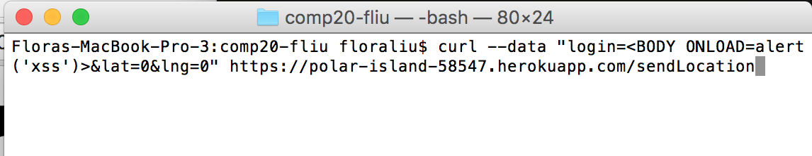
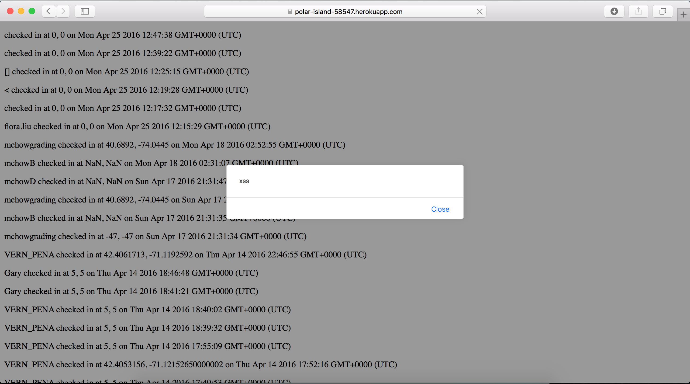
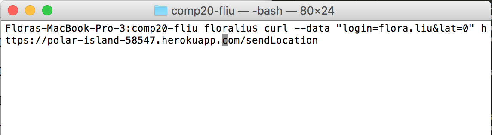
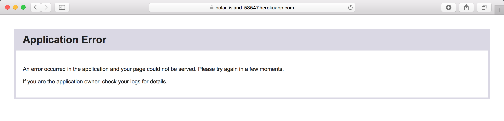
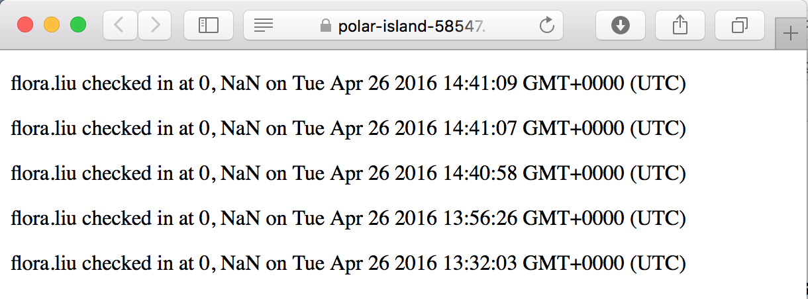
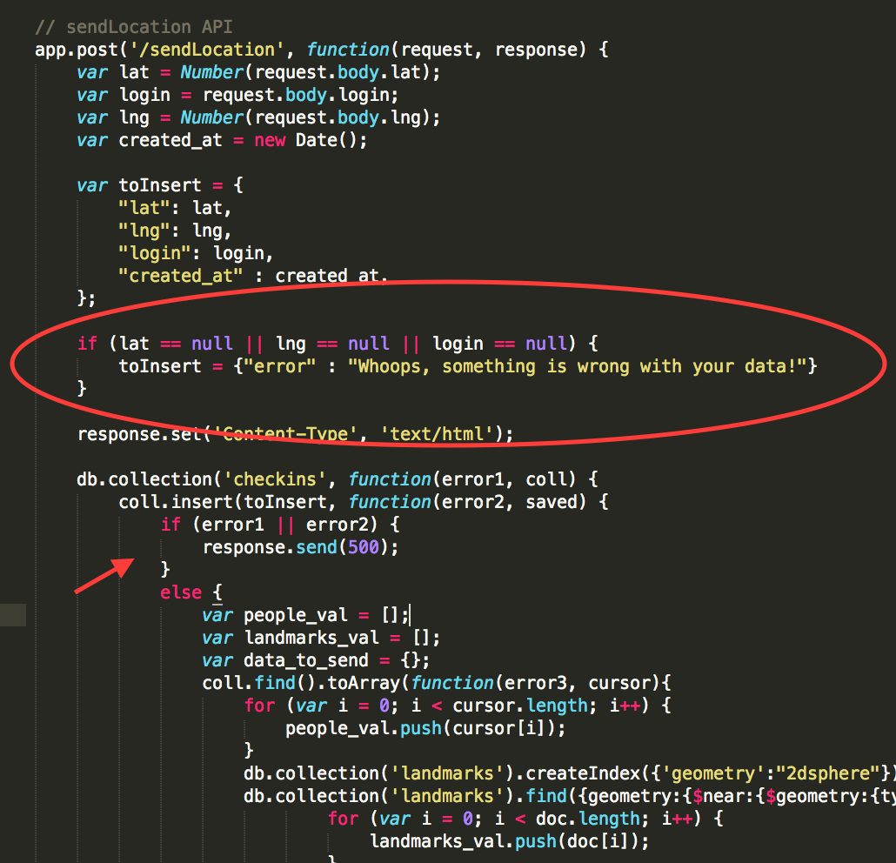
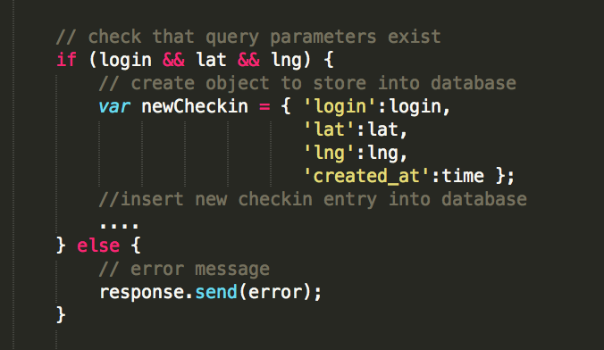
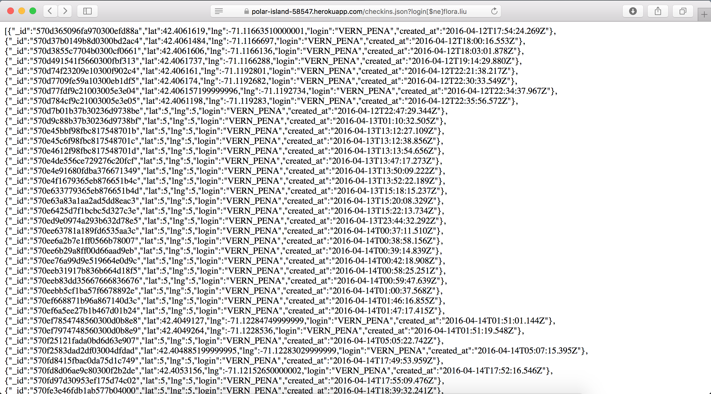
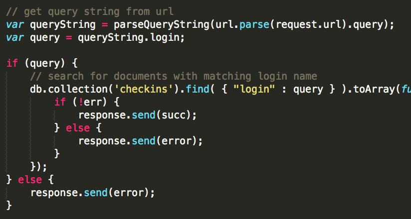

This security assessment tests the security of the historic landmarks server developed by Robert Goodfellow for the Comp 20 Assignment 4. The specification of this product is to develop a server-side web application using Heroku, Node.js and the Express web framework that will read and write data to a MongoDB database. Functions of this server including: "maintain location check-ins (login, latitude, and longitude) for a long period of time and serve data on the nearest U.S. historic landmarks within a mile of the user's location". However, there are vulnerabilities that make this server application insecure and unsuitable for public use. The text below identifies some technical issues and makes suggestions for improvements.
My security analysis was a two step process. I first tried "black-box" testing- which is simply performing attacks without reading the source code and using the knowledge of only what is available to an attacker. Afterwards, I asked for my partner's permission to gain access the source code of his application and perform a manual code review of my findings. Consequently, I was able to conduct "white-box" testing, in which I tried security attacks after finding suspicious loopholes when reading the source code.
The main security flaw in this project originates from user input. Because the web application allows users to submit data, any attacker is able to give us faulty information when they post. This information is then stored in our database, which persists and can impact our web application permanently. The three main examples of vulnerabilities include cross-site scripting (giving us malicious instructions to run on the web browser), user input with missing fields (leading to wasted storage space), and arbitrary queries to our database (loopholes in query parameters to reveal all the contents of our database).
Description:
This security vulnerability targets scripts embedded in a page executed from the user's web browser (client-side). XSS can be used to bypass access controls e.g. same-origin policy. XSS enables malicious attacks to manipulate client-side scripts in any form or manner, which are executed every time the page is loaded. Injection of such unauthorized scripts is possible when data input from users is included in webpages without proper validation. Thus, the victim of an XSS attack is the user rather than the application itself. In addition, other users accessing the same page are also vulnerable, because the unsanitized, stored user input is persistent in the database used by the web application. Potential risks of XSS attacks for this historic landmarks server include: ability for attackers to post faulty data with fraudulent web content, steal cookie information, inject malicious code, and more.
High
Example:
I used curl to inject Javascript and make the following HTTP POST request:
As a result of XSS, my alert message is now executed every time the main page is loaded.
Solution:
There are numerous ways to prevent XSS attacks. One method is to is HTML escaping before inserting untrusted data into HTML element content. We can remove the ability for user data to be interpreted as code. Before entering user input into the database, commonly dangerous characters with HTML entity encoding (such as angle brackets- change < and >) should be sanitized and converted first.
Description:
This security vulnerability mostly affects the database asepct of the web application. A submission to the POST api with inadequate input (missing data fields) still resulted in a new entry in the database. The consequence of storing things even though the required fields are missing is extra database space occupied and unnecessary lookups. An attacker could potentially submit numerous times with missing required fields to bombard the database with nonsense data.
Medium
Example:
I used curl to send the following data to the POST api (longitude missing):
After sending data with missing required inputs multiple times, I was able to populate the database with multiple faulty inputs. When I tried to load the web page, an application error occured.
As you can see, my user input with missing fields was still stored in the database.
Analysis:
Let's take a look at the code. In the POST api, a check exists to see whether any of the required fields are equal to NULL. This check is not sufficient, because the erroneous user data is still inserted into the database.
Solution:
The main strategy to prevent storage of user data with missing fields is to ensure that the query parameters in the POST api all exist. Though this check was performed previously, an error message should be raised rather than continuing onto insert into the database. Below is an example.
Description:
In the GET api, I found a security vulnerability in the checkins search. Instead of using an equal sign, I sent a GET request with the [$ne] (look at picture below). This loophole affects database execution, because an attacker could perform any query they desire to gain access to the database contents. Simply put, the "not equal" sign allows one to retrieve everything in the database (anything that doesn't match with the parameter) by inputting a parameter that does not exist in the database.
Severity of Issue:
High
Example:
I was able to get all the user information that did not have the "login=flora.liu".
Solution:
In order to resolve this technical issue, the mongo query should be explicitly coded. Never trust user input!
The technical issues mentioned above should be fixed as soon as possible to ensure that database informaiton is more secure and that user input will not tamper with the functionality of the web application. The suggested solutions will certainly reduce the security risks. Yet, a core problem still lies in the ability for anyone to submit a checkin withou authentication. This means that no geolocation checkin is truly reliable and can be trusted. Therefore, a re-structuring of the api to establish the highest security involves verifying the identity of the person submitting a location checkin (authenticaion).